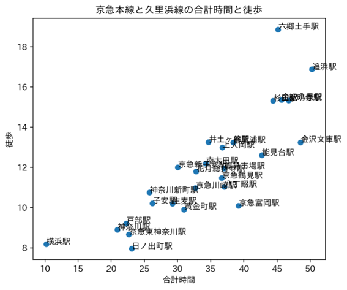

靴の観察👟
- 定点観測地点：グランモール円形広場
- 移動観察地点：MMCからグランモール円形広場まで
＜観察結果＞

(定点観察と移動観察の靴の数)
- 全体600人のうち367人が黒い靴だった＝全体の61.1%
- 定点観測でのスニーカーの数が目立つ
スニーカーを履いていた人の傾向👟
- 服装や年齢に関係なく履かれていた
- 若い人ほど明るい色が多く、年齢が上がるにつれて落ち着いた色だった
- スーツを着ている人は黒のスニーカーが多かった
ローファーを履いていた人の傾向👞
- スーツを着ていた人が多かったが私服でも履いているひとが多かった
- 黒と茶色が多かった
- 男性のローファーは靴先がとがっているものが多かった
その他🐰
- 今の時期は靴下の上にサンダルを履いている人が多かった(夏より少し涼しくなったから？)
- 赤ちゃんはカラフルな靴を履いていた
- ブーツを履いている男性はほぼいなかった
＜考察💡＞
- スニーカーが多い理由はショッピングや遊園地のために来る人が多く、たくさん歩くからスニーカーが多いのでは
- パンプスやローファーが多かった理由は仕事のお昼休みで外に出る人、ローファーはデートのおしゃれ靴で履いていた人が多かったから？